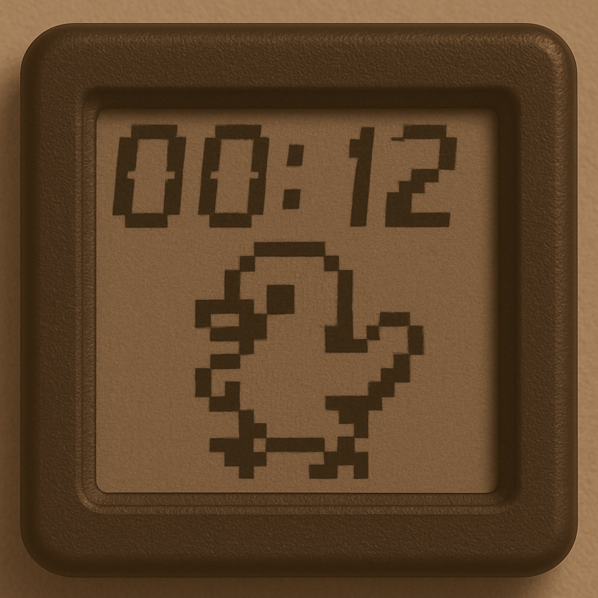

<div class="textcontainer">
<p class="margin"></p>
<h3>Final Project: Duck Timer</h3>
<img src="./video.gif" alt="duck" width="600">
<p class = "margin"></p>
The idea I decided to pursue for the final project was making fun kitchen timer that is enclosed in a 3d printed duck. Its function is to be a helper when cooking/baking so it warns you before your time is done in order to make sure that you check on your progress and making sure nothing burns or overcooks.
The process: I started with what I thought would be the hardest part which was the coding. I used a LCD screen, buttons and a speaker to code a timer. The next step was making the CAD design to package everything in a nice way.
<p class = "margin"></p>
I then started measuring my components in order to better design the overall packaging of my project. I found this to be a lot harder then I expected.
<br>
<img src="./LCD-box.jpg" alt="LCD-box" width="400">
<img src="./button-LCD-me.jpg" alt="button-LCD-me" width="400">
<p class = "margin"></p>
Then I started thinking of the movements that I wanted the duck to make. With that I started designing the mechanism with gears. All the files are bellow. However I then decided to fucus on the packaging of the screen and all the things with that.
<br>
<img src="./gears v1.jpg" alt="gears" width="200">
<img src="./gears2 v1.jpg" alt="gears2" width="200">
<img src="./lcd-box v1.jpg" alt="lcd-box" width="200">
<img src="./mechanismv1.gif" alt="lcd-box" width="200">
<p class = "margin"></p>
After polishing the final code (which can be found below) I soldered all the components together, everything continued working so I thought everything was fine. That was until the screen just started freaking out... It took really long before everything was fixed.
<br>
<img src="./problems1.jpg" alt="scree" width="400">
<img src="./problems2.jpg" alt="screen" width="400">
<p class = "margin"></p>
In the future I want to modify the code and use different componets (like a bigger screen) to make a better and improved version of this timer.
<br>
<p></p>
<h3>Code:</h3>
<pre><code class="language-arduino">
#include <Wire.h>
#include <LiquidCrystal_I2C.h>
// --- I2C Pins ---
#define SDA_PIN D4
#define SCL_PIN D5
LiquidCrystal_I2C lcd(0x27, 16, 2);
// --- Button Pins ---
const int startStopBtn = D0;
const int incBtn = D1;
const int decBtn = D2;
// --- LED Pin ---
const int ledPin = D7;
// --- Timer Variables ---
int minutes = 0;
int seconds = 0;
bool running = false;
bool timeUp = false;
unsigned long lastUpdate = 0;
// --- Duck Animation Variables ---
byte duck1[8] = {
B00100,
B01110,
B10101,
B11111,
B00100,
B01010,
B10001,
B00000
};
byte duck2[8] = {
B00100,
B01110,
B10101,
B11111,
B00100,
B10001,
B01010,
B00000
};
unsigned long lastDuckFrame = 0;
bool duckFrame = false;
void setup() {
Wire.begin(SDA_PIN, SCL_PIN);
lcd.init();
lcd.backlight();
lcd.setCursor(0, 0);
lcd.print("Timer Ready");
pinMode(startStopBtn, INPUT_PULLUP);
pinMode(incBtn, INPUT_PULLUP);
pinMode(decBtn, INPUT_PULLUP);
pinMode(ledPin, OUTPUT);
digitalWrite(ledPin, LOW);
// Create custom characters
lcd.createChar(0, duck1);
lcd.createChar(1, duck2);
Serial.begin(115200);
}
void loop() {
if (!timeUp) {
handleButtons();
updateCountdown();
displayTime();
} else {
showDancingDuck();
}
}
void handleButtons() {
static bool lastStartStop = HIGH;
static bool lastInc = HIGH;
static bool lastDec = HIGH;
bool startStop = digitalRead(startStopBtn);
bool inc = digitalRead(incBtn);
bool dec = digitalRead(decBtn);
// Start/Stop Button
if (startStop == LOW && lastStartStop == HIGH) {
running = !running;
Serial.println(running ? "Started" : "Stopped");
if (timeUp) {
timeUp = false;
digitalWrite(ledPin, LOW);
lcd.clear();
}
delay(200);
}
// Increase Time
if (inc == LOW && lastInc == HIGH && !running && !timeUp) {
minutes++;
if (minutes > 99) minutes = 99;
delay(200);
}
// Decrease Time
if (dec == LOW && lastDec == HIGH && !running && !timeUp) {
int totalSeconds = minutes * 60 + seconds;
if (totalSeconds > 0) {
totalSeconds--;
minutes = totalSeconds / 60;
seconds = totalSeconds % 60;
}
delay(200);
}
lastStartStop = startStop;
lastInc = inc;
lastDec = dec;
}
void updateCountdown() {
if (running && millis() - lastUpdate >= 1000) {
lastUpdate = millis();
if (minutes == 0 && seconds == 0) {
running = false;
timeUp = true;
digitalWrite(ledPin, HIGH);
lcd.clear();
} else {
if (seconds == 0) {
seconds = 59;
minutes--;
} else {
seconds--;
}
}
}
}
void displayTime() {
lcd.setCursor(0, 0);
lcd.print("Timer: ");
if (minutes < 10) lcd.print("0");
lcd.print(minutes);
lcd.print(":");
if (seconds < 10) lcd.print("0");
lcd.print(seconds);
lcd.print(" ");
}
void showDancingDuck() {
if (millis() - lastDuckFrame > 300) {
lastDuckFrame = millis();
duckFrame = !duckFrame;
lcd.clear();
lcd.setCursor(7, 0);
lcd.write(duckFrame ? byte(0) : byte(1));
lcd.setCursor(3, 1);
lcd.print("DUCK DANCE!");
}
}
</code></pre>
</div>